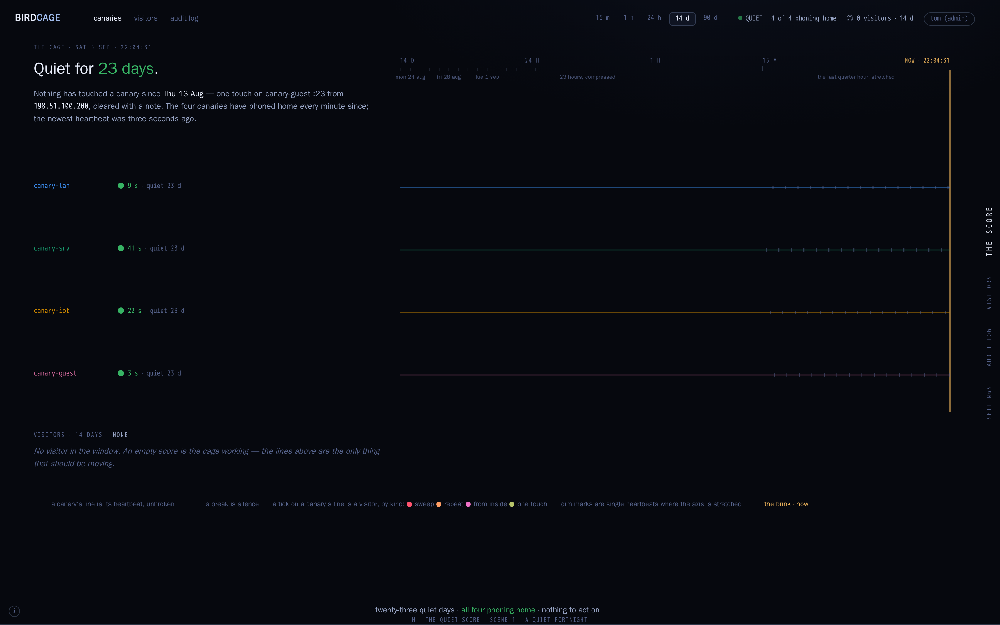
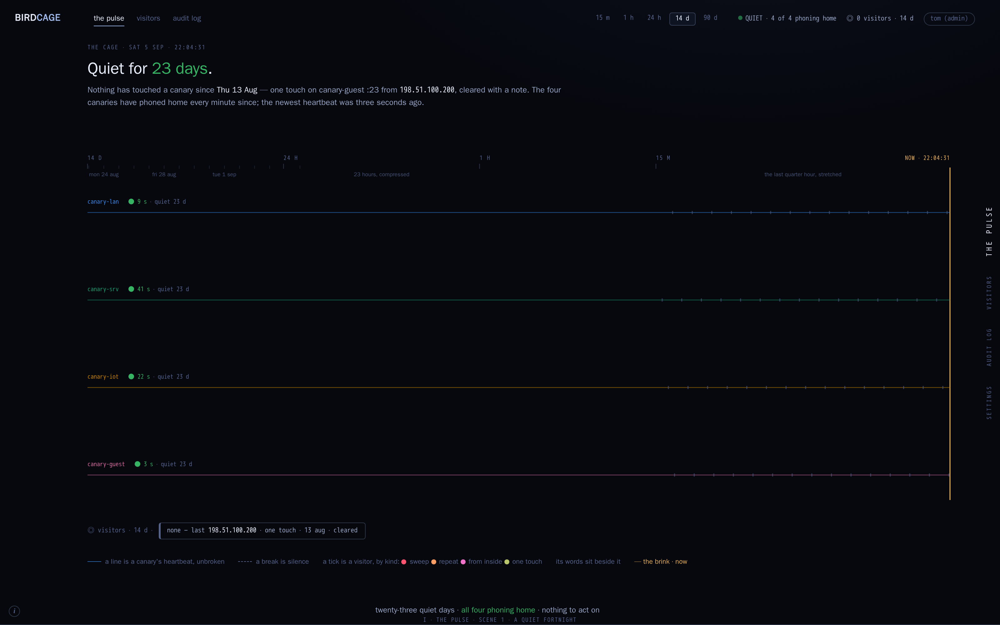

Two reworks of the score (round 3, G) around the owner's steer: the successful result is zero activity on every canary. So the canaries are the permanent subject and an empty score is the product working. Each canary's line is its heartbeat — unbroken means it is phoning home, a break is silence — and a silent canary is the other alarm. Visitors are ticks on the canary's line, and they get a sentence only when there is one to write.
Each page is one URL that scrolls through three scenes: a quiet fortnight (the success state, 5 Sep), a canary gone silent (the silence that is not success), the sweep night (12 Sep, the night from rounds 1–3).
Verdict 2026-09-12: neither as drawn. Run the four lines very close together, full width but a small vertical; visitors rise above them as labelled curves; tiles beneath, events beneath those: round 5.
Same shape as round 3: sentence on the left, stave on the right, one compressed axis. The canaries take the top of the page permanently; visitors move beneath as a section that, on a quiet day, is one line of prose: "No visitor in the window." On the sweep night the visitor rows come back with their own staves.

direction-h-quiet-score.html ▸ scene 1 · a quiet fortnight scene 2 · canary-iot gone silent scene 3 · the sweep nightOnly four things on the page: the canaries' heartbeats, full width, with the sentence above them. No visitor rows at all — a visitor is a tick on the canary it touched, its words written beside the tick, and a chip in the visitors line below. The quiet fortnight is four unbroken lines and one chip that says "none".

direction-i-pulse.html ▸ scene 1 · a quiet fortnight scene 2 · canary-iot gone silent scene 3 · the sweep night